1) Ma passion pour la Biologie :
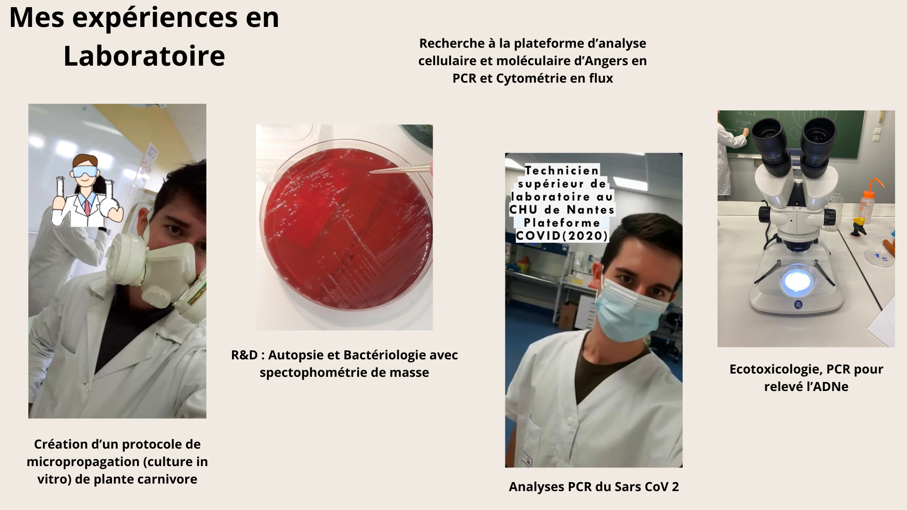
En deuxième année, en groupe, nous avons mis au point un protocole de micropropagation (culture in vitro) de la plante carnivore Dionaea muscipula. Nous avons fait varier les concentrations de phytohormones (auxine et cytokinine) ainsi que d'autres paramètres pour optimiser la culture.
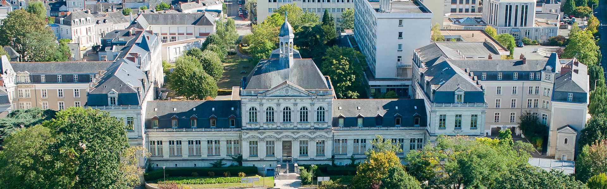 Après l’obtention de mon BTS, j’ai intégré une Licence 2 en Sciences de la vie et de la terre à l'Université Catholique de l'Ouest à Angers. Etant déjà une personne relativement engagé, j'ai pris le poste d'Ambassadeur de l’Université, avec pour mission de promouvoir les différents parcours proposés dans l’ouest de la France. Ce travail, cumulé à mes jobs d’été, m’a permis de financer mes études.
Au cours de cette licence, j'ai effectué un stage de recherche à la Plateforme d'Analyse Cellulaire et Moléculaire (PACEM) à l'Institut de Biologie en Santé d'Angers, où j'ai acquis des compétences en PCR, cytométrie en flux et biologie cellulaire. En parallèle, j’ai suivi une spécialité et réalisé un stage en tant que professeur des écoles, car ma passion pour l'enseignement était déjà présente.
Puis est venue la période COVID. Pendant ma licence, j'ai suivi des cours sur les enjeux écologiques, et c’est à ce moment-là que j'ai pris conscience de l’urgence environnementale. L'été suivant, j’ai travaillé comme technicien supérieur de laboratoire à la plateforme COVID du CHU de Nantes, où nous étions en pleins "RUSH" pour analyser les tests PCR. L’ambiance était bonne, et j'ai rapidement gagné en compétences et en confiance, au point de former les nouveaux arrivants et de gérer le laboratoire en fin de CDD.
Pendant ce même été, le 5 juin, le jour de mon anniversaire, j’ai découvert la vidéo "Réveillez-vous" de Camille Etienne et Solal Moisan.
Toutes ces paroles synthétisaient à ce moment-là, mes pensées. "Ne rien dire c'est être d'accord, ne rien faire c'est ne pas vouloir que les choses changent". J'ai ainsi stalké toutes ces vidéos, et mon nouveau passe temps venait de se créer, l'ÉCOLOGIE.
J’ai ainsi commencer à acheté des livres sur l'écologie, mon premier se fût: L'Économie bleue de Gunter Pauli qui fût vraiment très intéressant, un livre dont j'avais entendu parler grâce à Idriss Aberkane. Malheureusement, avec le temps, j'ai constaté (selon moi) qu'Idriss à dérivé peu à peu dans la tentation du gain et ainsi inscrire l'éloge entre vérité et mensonge pour augmenter sa communauté.
2) Vers un engagement écologique :
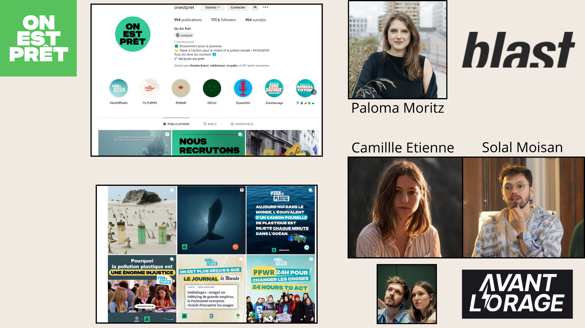

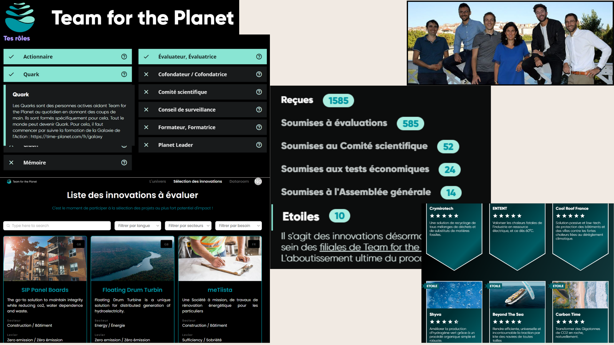
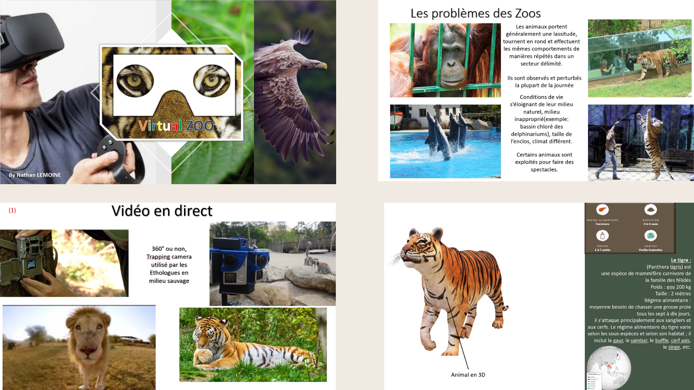
Après cet échange, LS Group m’a invité à une visioconférence où ils ont déclaré que cette innovation pourrait recevoir un prix Nobel et qu'ils étaient prêts à financer le projet et à me nommer responsable de ce projet. J’ai alors travaillé sur une modélisation 3D avec interface graphique pour représenter les différents biomes. J’étais prêt à présenter le projet, mais l'annonce du métavers de Mark Zuckerberg m'a fait réfléchir. J'ai tout de suite vu un problème car la métaverse pourrait sans nul doute vouloir racheter le Virtual-Zoo ou même sans inspirer. L'objectif de l'innovation, ce n'est pas de s'isoler dans un monde virtuel mais bien d'être sensibiliser sur le vivant et sans déranger les espèces en voie de disparition. J'ai donc arrêté ce projet.
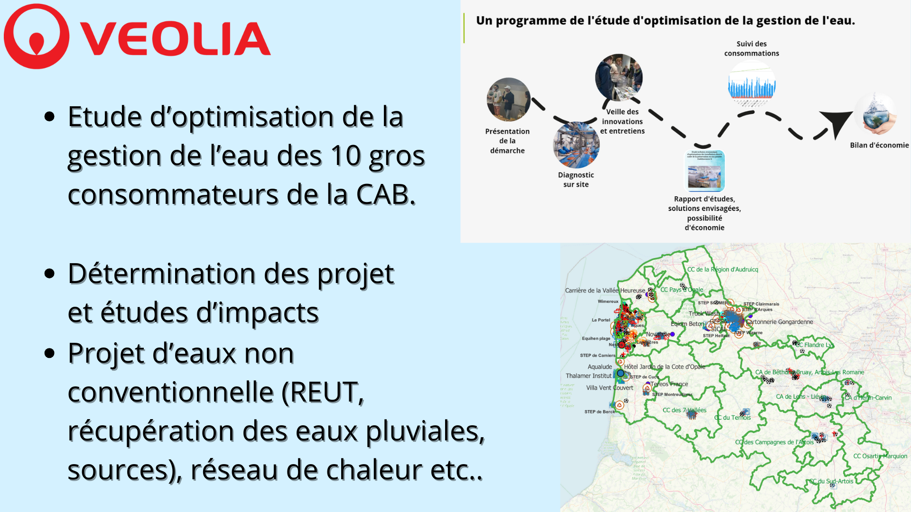 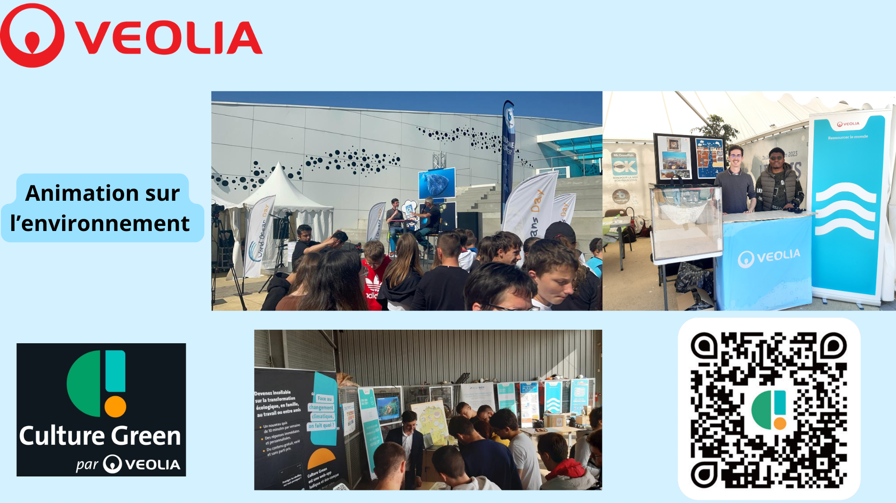
Ma mission initiale était d'élaborer un plan d'action pour accompagner les dix plus gros consommateurs d'eau potable de la communauté d'agglomération du Boulonnais. Ayant accès à la liste de ces consommateurs, je les ai sélectionnés et ai développé un carnet d'adresses en les contactant un par un. Après avoir élaboré ce plan d'action, je leur ai présenté et fixé des dates d'audit. La durée de ces audits variait de 2 heures à 3 jours selon le type d'activité. À la suite de ces audits, j'ai réalisé une étude détaillant des solutions adaptées à chaque entreprise.
Avant cela, j'ai mené des entretiens avec des innovateurs pour découvrir leurs innovations en détail. Après avoir finalisé ces études, je les ai présentées à chaque activité en exposant les innovations pertinentes ainsi que leur retour sur investissement.
Ma maîtrise du projet m'a permis de travailler en parallèle sur d'autres missions. J'ai ainsi réalisé des études sur la récupération des eaux pluviales pour diverses activités (carrière, jardin partagé, camping, etc.) sur le territoire du Littoral Audomarois. J'ai également mené des études d'impact pour la mise en place de projets urbains, notamment sur les réseaux de chaleur urbains et la réutilisation des eaux usées traitées pour des golfs et un hippodrome, en déterminant les coûts associés, que ce soit dans le cadre d'avenants ou de projets privés. J'ai acquis une solide connaissance de la réglementation associée et des demandes de financement via des appels à projets, notamment auprès de l'Agence de l'Eau.
En parallèle, j'ai animé des ateliers de sensibilisation à l'environnement pour différents publics, allant des enfants aux élus, et j'ai conçu un jeu éducatif pour sensibiliser aux enjeux environnementaux. J'ai aussi effectué un recensement des résurgences d'eau, jugées comme parasitaires aux réseaux, et analysé leur qualité, déterminant ainsi les usages possibles de ces eaux à proximité.
J'ai développé un système cartographique optimisé pour la gestion de projets environnementaux, recensant plus d'une trentaine de projets sur le territoire. De plus, j'ai conçu et codé un intranet pour Veolia, intégrant l'ensemble de ces projets, avec un système d'évaluation basé sur la faisabilité financière, l'impact sur la ressource en eau, et la rentabilité. Ce système génère un score et un nuage de points permettant de visualiser les priorités d'actions en superposant ces variables, facilitant ainsi la sélection des projets à mettre en œuvre en priorité.
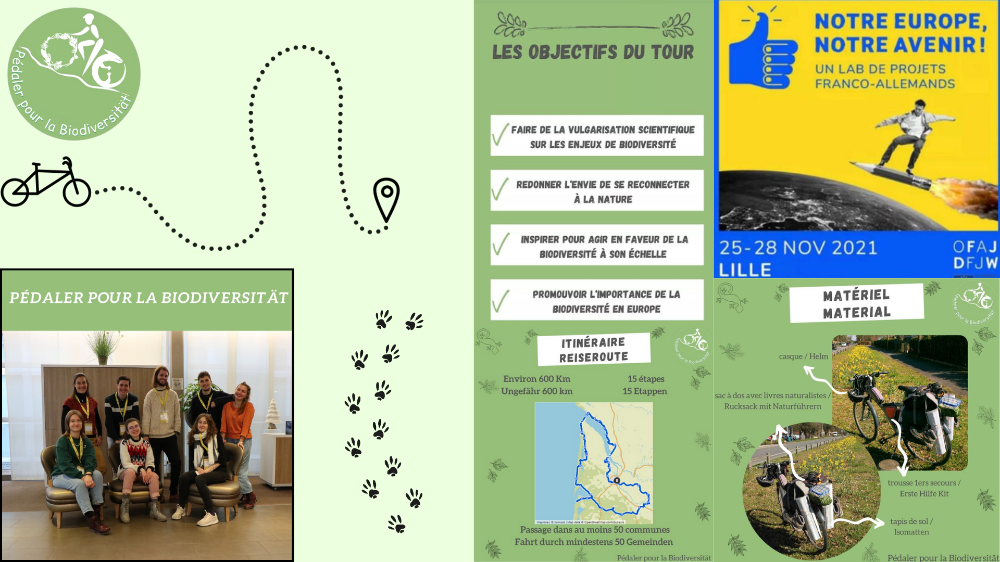 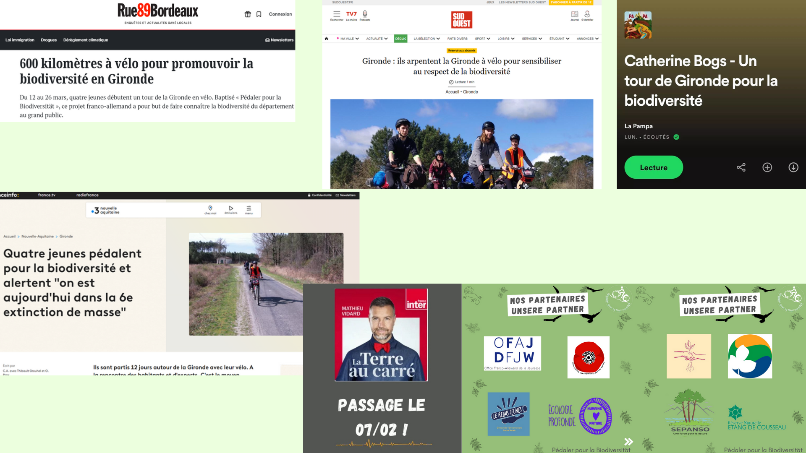
Lors d'une seconde visioconférence, j'ai rencontré Lucie, et a nous tous, nous avons décidé des thématiques sur lesquelles nous allions travailler. Initialement, j'étais chargé de la responsabilité sociétale des entreprises (RSE), mais au fil du temps et grâce à mes contacts, j'ai pris la responsabilité de Vice-président des relations externes et partenariats. Avec Mathieu, Lucie et Cyril, nous avons passé d'innombrables heures à avancer sur le projet, en organisant des débriefings longs chaque semaine ou toutes les deux semaines.
Ce qui a commencé comme un petit projet a finalement donné naissance à un événement d'envergure, parrainé par Yann Arthus Bertrand, qui s'est déroulé sur trois jours au Centre des Congrès et à l'Université d'Angers. L'événement comprenait des conférences, des tables rondes avec des experts de la biodiversité, de l'énergie, des transports et de l'eau, etc... on pouvait y trouver des ateliers de sensibilisation, un forum des métiers engagés avec une trentaine de stands, ainsi qu'un festival Art et Écologie. Ce dernier proposait des projections de films avec des interventions de réalisateurs, des spectacles d'une compagnie artistique de danse, des concerts, et de l'art participatif.
Cet événement réunissant près de 3000 personnes de tous types d'activités et de tout âge permettant d'agir tous ensemble sous le discours d'élaborer la ville durable de demain. Après cette aventure, la COP 3 Etudiante continue à s'engager dans plusieurs actions locales auprès des acteurs du territoire. Mon travail se poursuivait par de la sensibilisation et présenter l'événement qu'on avait effectué. "
Pendant mon Master 2, j'ai effectué un projet tuteuré en groupe qui consistait à créer des outils de médiation scientifique ciblés sur les jeunes de mon âge. Cette médiation était centrée sur le projet Loire Sentinelle, une aventure menée par mes professeurs aventuriers lors de leur périple de l'année précédente. Leur entreprise s'appelle NatExplorers (n'hésitez pas à jeter un œil à leur site). Ils ont traversé toute la Loire en canoë et à pied, soit 1000 km, tout en réalisant des prélèvements d'eau et de sédiments. Ces prélèvements avaient pour but d'analyser l'ADN environnemental afin de déterminer les espèces présentes dans chaque zone, ainsi que la présence et le type de micro et nanoplastiques. Ils ont également mené des actions de sensibilisation sur la pollution et le déclin de la biodiversité tout au long de leur parcours. Pour moi, ces deux professeurs sont de véritables exemples de réussite.
Aujourd'hui, la question des micro et nanoplastiques n'a plus de secret pour nous. D'une part, nos professeurs d'université travaillent sur ce sujet, ce qui nous a permis de réaliser nous-mêmes des analyses écotoxicologiques. D'autre part, nous avons organisé un événement avec l'ensemble de notre promotion et nos professeurs référents, qui comprenait des tables rondes et des conférences sur le thème du plastique.

Pendant les 9 mois, je continue mes projets avec Veolia, s'y ajoute un côté chargé d'affaires notamment pour des contrats en rapport avec l'environnement, un sujet devenu encore plus crucial après les inondations dévastatrices dans le Pas-de-Calais. En parallèle, je reste actif dans mes engagements associatifs, prends des cours d'anglais pour être prêt à l'approche de mon départ pour New York, et donne ma première conférence à l'Université Catholique de l'Ouest. Par la suite, lors de la cérémonie de remise de diplômes, j’ai l’honneur de prendre la parole au nom de ma promotion. J'en profite pour remercier l'assemblée et partager quelques mots sur les enjeux environnementaux face à un public de plusieurs centaines de personnes.
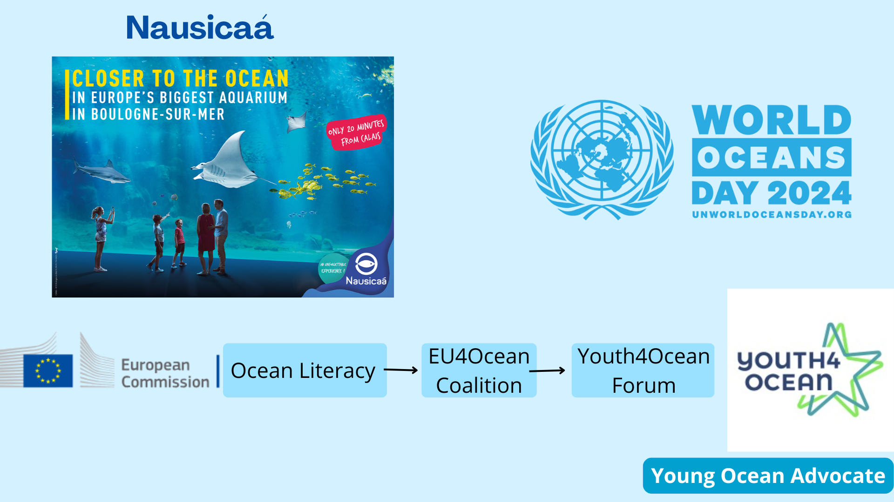
Un soir, ma nouvelle colocataire m'invite à une conférence qui se tient à Nausicaa (le plus grand aquarium d'Europe) situé à seulement quinze minutes de chez moi. Ces conférences étaient organisées par les étudiants en master de l’université ULCO. À la fin de la conférence, je croise une tête que j'avais déjà vu. Je me présente, et propose de faire un partenariat pour faire des animations. Très enthousiaste de mon engagement, il me tend sa carte : c'était le directeur de Nausicaa. Il m'informe que je pourrais intervenir en tant que conférencier et animateur à Nausicaa, et me met en contact avec le service d'animation.
Les jours suivants, j'envoie un mail, et le chargé des relations internationales de Nausicaa prend rapidement contact avec moi.
Nous avons une visioconférence où je présente mes activités et mes projets. C’est à ce moment qu’il m'invite à rejoindre le programme "Youth4Ocean", une initiative de la Commission Européenne visant à sensibiliser le public sur les océans, à protéger les habitats et espèces marines. Lors de notre échange, je lui parle de mon futur voyage à New York, puis où il m'évoque immédiatement la possibilité de participer à une conférence lors de la Journée Mondiale des Océans (World Oceans Day) des Nations Unies qui se passe justement à New York pendant que j'y suis.
Malheureusement, ma candidature pour représenter le programme n’a pas été retenue. Néanmoins, une semaine avant le début de l'événement à New York, grâce à Liberato Bautista (Levy), président de la CoNGO (Conference of Non-Governmental Organizations in Consultative Relationship with the United Nations), j’obtiens mon badge pour accéder aux Nations Unies.
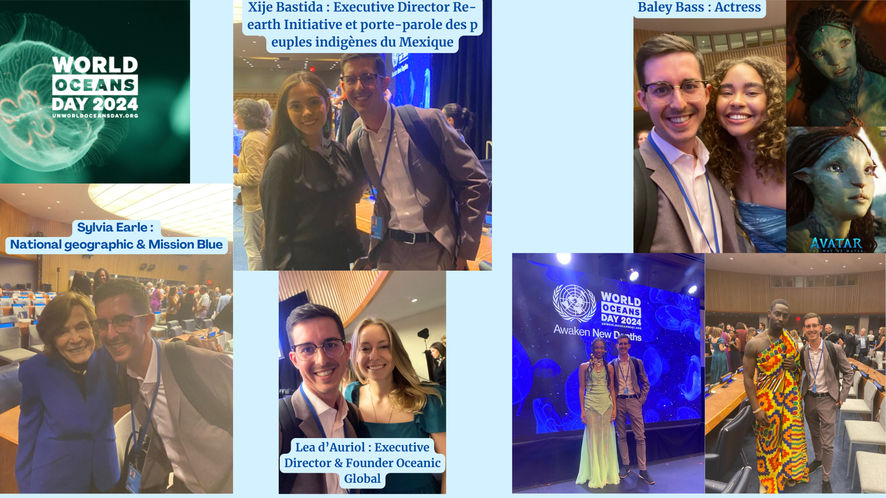
Je me rends donc à la Journée Mondiale des Océans, où j’ai l'opportunité de rencontrer et d’échanger avec de nombreuses intervenants comme la fondatrice d’Ocean Global, la fondatrice de la Re-Earth Initiative, la créatrice de National Geographic & Mission Blue, ainsi qu’une actrice d’Avatar 2 et j'en passe. Ce fût un moment incroyable.
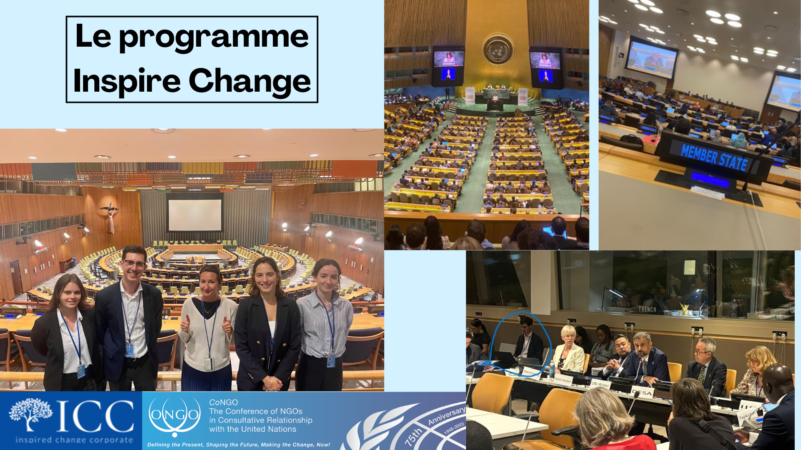 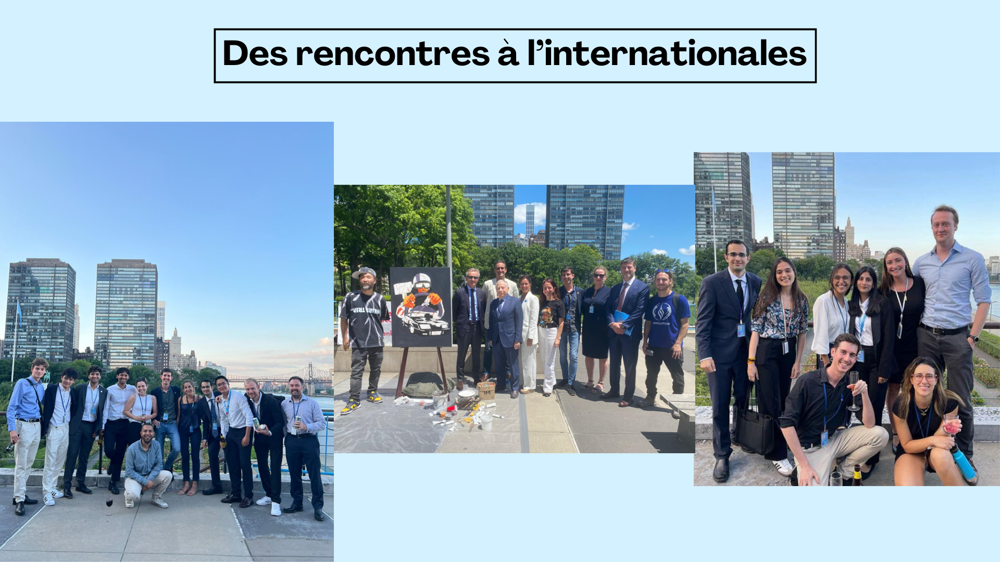 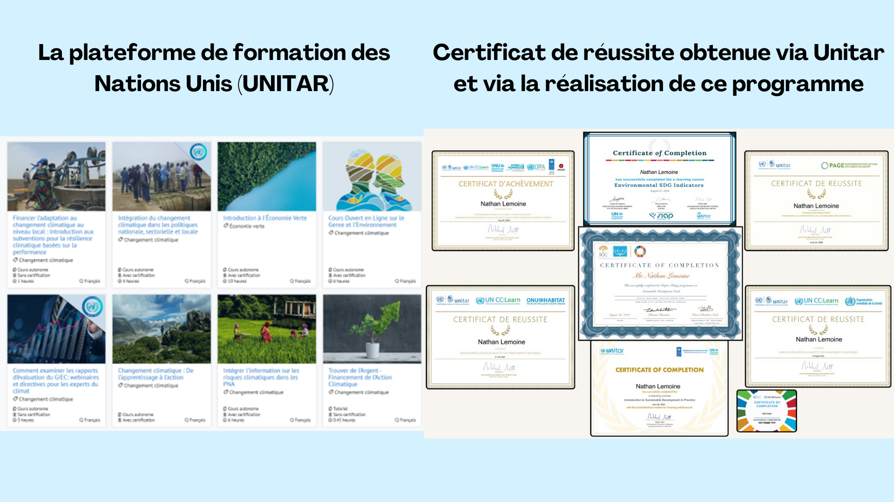
Lors du programme Inspired Change, nous avons eu plusieurs cours avec des intervenants et des formations à suivre sur la plateforme des Nations Unies , UNITAR. J'ai pu participer à de nombreuses conférences sur différentes thématiques, que ce soit au Conseil de sécurité ou en comité restreint. Au mois de juillet s'est tenu le High-Level Political Forum (HLPF), un événement de deux semaines ayant lieu à New York, au siège de l'ONU, et ce fut très gratifiant. La fin du programme avait pour objectif l'élaboration d'un mémoire de recherche sur les Objectifs de Développement Durable, qui pourrait par la suite être publié par l'UNESCO. Cette expérience m'a permis d'élargir mon réseau au niveau international, de perfectionner mon anglais et d'acquérir de nouvelles connaissances sur le fonctionnement du monde afin d'y apporter des solutions déjà existantes mais qui doivent aujourd'hui être appliquées.

Mon projet de recherche porte sur le sujet : La relation entre les déplacés environnementaux intra-régionaux et la ressource en eau dans la région des Hauts-de-France d'ici 2050. À travers ce rapport, j'ai actualisé l'état des connaissances sur les risques environnementaux, estimé le nombre de déplacés environnementaux, et imaginé leurs conditions de vie en fonction des diverses approches prospectivistes ainsi que de la vision des jeunes.